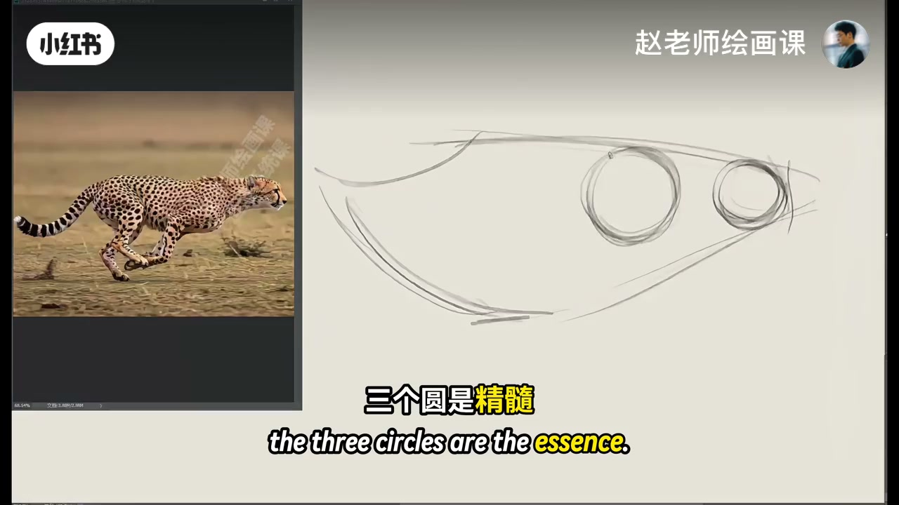
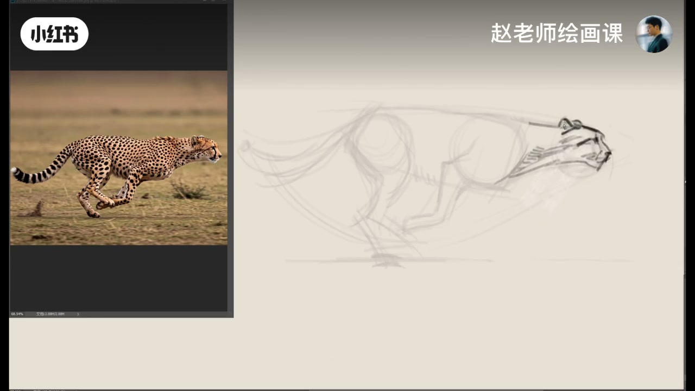
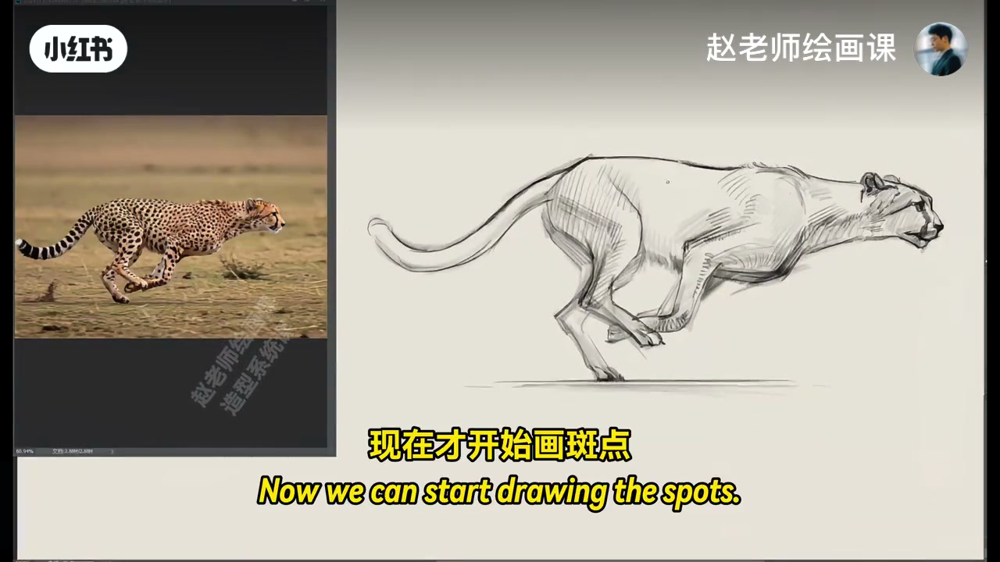
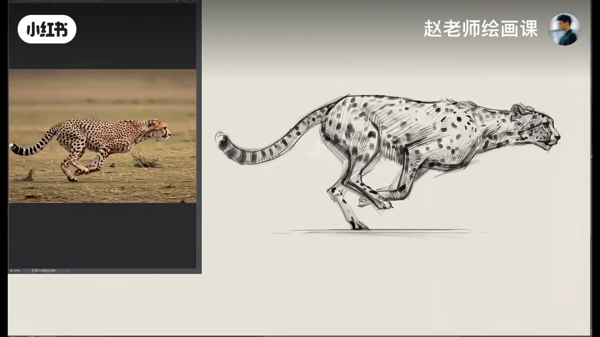

内容要点
示范奔跑猎豹：动态型上手后，三个圆是精髓；四肢可参考猫科骨骼图。第一遍细化时头的特征型关键，胸腔较方像铁块，脊柱动态一定要交代清楚，四肢找准关节运动方向，尾巴粗壮有力不能画细。深入再考虑眼睛表情与基本光影、爪脚形状。最关键的是——现在才开始画斑点：顺着已建体块意思一下，千万别对着硬抄。素材放评论区。
知识结构
三圆精髓；胸方、脊柱清、关节准、尾粗。
头表情＋躯干光影＋爪脚形。
贴体块意思一下，禁止硬抄。
动态动物先锁三圆与关节方向，斑点是最后的装饰——体块没立住就抄花纹，只会越抄越散。
00:00-00:50三圆起形与四肢关节
今天示范猎豹动态。老样子用动态型上手以后，三个圆是精髓；四只脚可以参考猫科动物的骨骼图。
第一遍细画：头的特征型关键，胸腔是比较方的铁块，整个脊柱的动态一定要交代清楚；画四肢一定要找准关节的运动方向；尾巴粗壮有力，不能画细了。00:09／00:30 对照奔跑参考。


00:50-01:15深入：表情与光影
最后的深入：头部可以开始考虑眼睛和表情，躯干给一些基本光影，四肢留意爪子和脚的形状。
这一段把「先结构后纹理」垫好，为斑点做准备。
01:15-01:50斑点最后才上
最关键的要来了：现在才开始画斑点。可以顺着已经建立好的体块往上、往下移动，意思一下这些斑点就可以，千万别对着硬抄。
完美收工；素材放评论区，跟着赵老师一起练。01:22 斑点贴体块的现场。


完整转录（28段）
以下文本由 Whisper medium 模型自动转录，可能存在少量识别误差，已尽可能修正。
今天我们来示范一张猎豹的动态
老样子用动式型上手以后
三个圆是精髓
四只可以参考猫磕动的骨骼图
来到第一遍细画
头的特征型是关键
胸腔是比较方的铁块
整个肌柱的动态一定要交代清楚
画四只一定要找准关节的运动方向
尾巴是粗壮有力的
不能画细了
最后的深入
头部可以开始考虑眼睛和表情
躯干可以给一些基本的光影
四只要留意爪子和脚的形状
最关键的要来了
现在才开始画斑点
我们可以顺着已经建立好的体块
往上移动
然后再往下移动
我们可以顺着已经建立好的体块
意思一下这些斑点就可以
千万别对着硬抄
好了完美收工
你学会了吗
素材我放在评论区
跟着赵老师一起练起来吧
拜拜